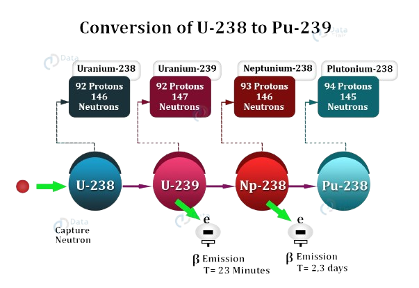
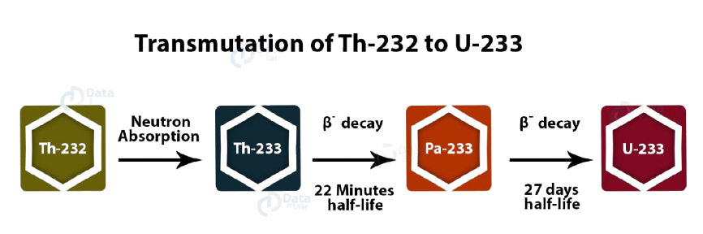
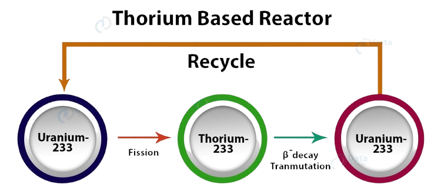

On 26 April 1948, Bhabha wrote to Prime Minister Jawaharlal Nehru that "the development of atomic energy should be entrusted to a very small and high-powered body composed of say three people with executive power, and answerable directly to the Prime Minister without any intervening link. For brevity, this body may be referred to as the Atomic Energy Commission."
Pursuant to the Atomic Energy Act, the Atomic Energy Commission (AEC) was established on 10 August 1948. Nehru appointed Bhabha as the Commission's first chairman.
The three-member Commission included S. S. Bhatnagar and K. S. Krishnan. Bhabha, Bhatnagar and Krishnan were also named to the Scientific Advisory Committee to the Ministry of Defence created in July 1948.
When Bhabha realised that technology development for the atomic energy programme could no longer be carried out within TIFR he proposed to the government to build a new laboratory entirely devoted to this purpose.
For this purpose, 1,200 acres of land was acquired at Trombay from the Bombay Government. Thus, the Atomic Energy Establishment Trombay (AEET) started functioning in 1954.
The same year, Bhabha was appointed the secretary of the Department of Atomic Energy (DAE) under the direct charge of the Prime Minister. Atomic Energy was established as a separate ministry, where earlier the AEC fell under the umbrella of the Ministry of Natural Resources and Scientific Research.
Bhabha claimed that "although the Atomic Energy Commission was established as an advisory body in 1948 in the Ministry of Natural Resources and Scientific Research, no important effort to develop this work was made until a separate department of the Government of India with the full powers of a ministry was established in August 1954.
At the DAE, Bhabha maintained relative autonomy over priority-setting, and throughout the 1950s and the early 1960s, nuclear policy remained little-discussed in the Parliament and in public life.
Three-stage plan:
Bhabha is credited with formulating a strategy of focusing on extracting power from the country's vast thorium reserves rather than its meagre uranium reserves.
He presented this plan to the Conference on the Development of Atomic Energy for Peaceful Purposes in New Delhi in November 1954.
This thorium-focused strategy stood in marked contrast to all other countries in the world.
Homi J Bhabha presented the program in 1954, adopted by the GOI in 1958, which oulined India's three-stage nuclear doctrine for achieving strategic capability through phased use of thorium and fast breeder reactors.
Stage 1:
In the first stage of the nuclear program natural uranium fueled pressurised heavy water reactors (PHWR) produce electricity while generating plutonium-239 as by-product.
PHWRs were chosen because they are efficient in terms of uranium utilization.
It was calculated that it would be easier to create heavy water production than uranium enrichment facilities.
Using PHWRs instead of LWRs was a wise decision because PHWRs use unenriched uranium, which India could domestically produce.
Here are the reactors used in the first stage:
Boiling Water Reactor
Pressurized Heavy Water Reactor
Pressurized Water Reactor

Stage 2:
In the second stage of the nuclear power program, plutonium-239 is employed to create mixed-oxide fuel for use in Fast Breeder Reactors.
Plutonium-239 undergoes fission to generate energy, and the resulting metal oxide is combined with enriched uranium to produce additional plutonium-239.
Once a sufficient quantity of plutonium-239 is accumulated, thorium will be utilized in the reactor to produce Uranium-233. This Uranium-233 is a crucial component for the third stage of the program.
The Fast Breeder Reactor, first established in Kalpakkam, Tamil Nadu, operates without a moderator and utilizes liquid sodium as the coolant. It is also commonly referred to as the Fast Neutron Reactor.

Stage 3:
The third stage of India's nuclear power program is designed to achieve a sustainable nuclear fuel cycle.
This will be done by using a combination of uranium-233 and thorium.
Thorium is a fertile material, which means that it can be used to produce fissile material.
In the third stage, thorium will be used in thermal breeder reactors.
These reactors will use thorium to produce uranium-233, which can then be used to fuel other reactors.
The use of thorium in the third stage will help to ensure that India has a sustainable supply of nuclear fuel.

About Owner
Copyright@2024
This tribute website on Homi.J.Bhabha was created by Aswin Raj P.